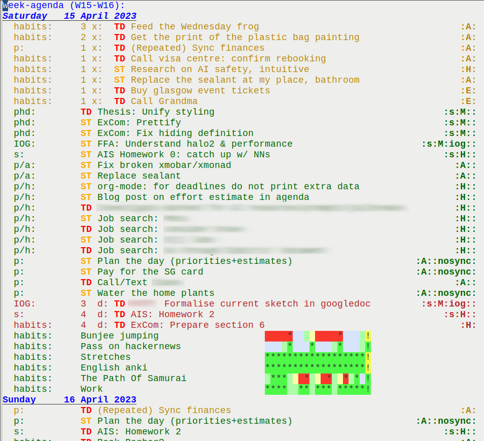
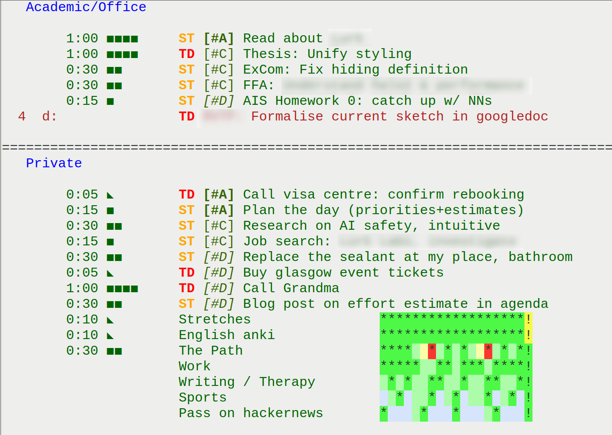

Visualizing Estimates in org-mode's Agenda
TLDR: things many, computer complex & scary, visual agenda good, brain control no panic.
If you're using org-mode and tend to over-organise things hoping that that will improve your productivity or mood (which it might, or might not!), then there's a high chance you at least once found yourself in the following situation. You spend a weekend somewhere, maybe even not opening your computer for a few days, only to return back on Monday and see this:

(Some of the tasks are fictional.)
…which in my case leads to generally assuming that I cannot do a lot of work on Monday, because Monday is … well … a day for stressful admin resolution. And not just Monday – quite often I have at least 20 elements in my agenda, plus calendar in firefox, plus journal, plus physical notebooks, plus you need to bring this thing to the office and that home, plus "a delivery fee and just a few pounds for a 4-pack of Tennets luv".
At some point I really took some time to consider the advice from a certain person who is giving me advice. And the advice was "omg no wonder you feel like this the whole time", to which I immediately started replying "nono wait you don't understand, see – it is this and this is that and this is a category and this colour means blocked and", and she was actually right. My agenda is quite cluttered, and ritalin won't help. However not using the agenda is not an option… take it as an assumption.
Instead I wrote some elisp, that roughly follows some GTD-like approach (maybe), that makes my agenda less cluttered and implicitly pushes me towards certain organisational strategies that seem nice.
The strategies are:
- Assigning task priorities based on urgency+importance, aka Eisenhower Matrix approach, through org priorities.
- And not using tags or putting tasks in different subtrees, because priorities change often, and there's no incentive to move tasks around.
- And not just sorting things according to categories like "social", "music", "writing" etc.
- Keeping tasks small and clearly stated.
- Ideally not like "Figure out problem X"
- Understanding time estimates and portioning tasks. Making sure it's doable within a day.
- Small tasks must look like they are small.
- If it's a big task (which it shouldn't be), the task presence in the agenda must mean doing a bit of that task.
- Making separation between work and non-work tasks clear to minimise mixing the contexts.
If you are me and reading this you probably feel like "thanks, 5 more rules to follow, as if I don't have a million rules already". You're right! However, the trick is to force the environment to force you to do this. In my particular case this boils down to making agenda look nice and pretty only when all these conditions are satisfied; and ugly otherwise.
Now, that's what my new agenda looks like after sorting:

This asks for some explanation:
- Estimates:
- The semantics of "estimate" column is "about how much of this I will do today". As I mentioned, ideally, this must mean how much the task takes in total. But if it's a "look into X" type of task, this means how much I will bite off just today.
esets the effort if you're in the agenda window. - The "estimate" column is not synchronized with org clocking. Almost. It is possible, but I like to keep it simple.
- The semantics of "estimate" column is "about how much of this I will do today". As I mentioned, ideally, this must mean how much the task takes in total. But if it's a "look into X" type of task, this means how much I will bite off just today.
- Priorities:
- The A B C D priorities correspond to the four squares I mentioned earlier.
- (A and C are important, A and B are urgent, everything else is the opposite.)
- C is the most common one. A appears when I have some deadlines. B and D are more rare, since if it's not important, why is it even in my calendar?
- D is there to handle FOMO, because I don't want to forget about this cool thing I wanted to check out.
- B is there to remind me I can let go of certain things without any (external) penalty.
S-up/S-downmake it easy to change the priority of a task.
- The A B C D priorities correspond to the four squares I mentioned earlier.
- I don't need tags or categories in agenda because I never use them, and they make the whole thing look cluttered. For disambiguation I often prefix the task name with some code shorthand, e.g. "Thesis: initialise the repo". Simple is good.
In addition to the agenda incentivising me to fill everything in properly (irregular patterns make me stressed, so I fill everything in), I also have a "daily planning" task that is called "Plan the day (priorities + estimates)". This is supposed to help to reestablish a habit after a longer break.
Here is a relevant piece of code that generates and uses the pretty effort estimates:
(defvar effort-ticks '(?■ ?◣) "Ticks used in the progress bar. The first tick must represent the full one, and consequitive N are marking half-steps in a linear way. Must be at least length 2.") (defvar effort-tick-size 15 "Number of minutes (integer) the full effort tick represents") (defun effort-bar-round (minutes) "Given (N, a, b) where b | a, represents N as N' = u * a + v * b, such that N' is close to N, but at the same time N' > 0 always." (let* ((effort-small-tick-size (/ (float effort-tick-size) (length effort-ticks))) (minutes-rounded (+ (* (/ minutes effort-tick-size) effort-tick-size) (* (fround (/ (% minutes effort-tick-size) effort-small-tick-size)) effort-small-tick-size))) (big-ticks (floor (/ minutes-rounded effort-tick-size))) (quotient (- minutes-rounded (* big-ticks effort-tick-size))) (small-ticks (if (= minutes-rounded 0) 1 (round (/ quotient effort-small-tick-size)))) ) (cl-values big-ticks small-ticks))) (defun effort-bar (effort) "Draws a visual effort bar to be used in agenda." (if effort (save-match-data (when (string-match "\\([0-9]+\\):\\([0-9]+\\)" effort) (let* ((hours (string-to-number (match-string 1 effort))) (minutes (string-to-number (match-string 2 effort))) (total-minutes (+ minutes (* hours 60)))) (cl-multiple-value-bind (total-big-ticks total-small-ticks) (effort-bar-round total-minutes) (concat (make-string total-big-ticks (first effort-ticks)) (if (= total-small-ticks 0) "" (string (nth (- (length effort-ticks) total-small-ticks) effort-ticks)))))))) "")) (defun effort-visual () "Prints effort + effort bar." (let ((effort (org-entry-get nil "EFFORT"))) (if effort (format "%-5s%-9s" effort (effort-bar effort)) " "))) (setq org-agenda-prefix-format '((agenda . " % t%7 s%(effort-visual)") (todo . " %-8:c ") (tags . " %-5:s ") (search . " %-8:c ")))
The symbols are font-dependent, and so I keep this comment around in my .emacs in case I need to adjust something after a system update:
; https://en.wikipedia.org/wiki/Geometric_Shapes_(Unicode_block) ; https://en.wikipedia.org/wiki/Braille_Patterns ; https://en.wikipedia.org/wiki/Box-drawing_character ; ◐ ◔ ◕ ⬤◐ ; ▂▄▅▆▇█ ; ▉▋▋▌▍▏ ; ▪■◼◼︎◼■▤▦◧▣◼□▢◻▯◺◣ ; ⣿⣧⡇⡄ ⣷ ⣦ ⣇ ⣄ ⠶ ; ◭▲
Everything else, except for these visual estimates, is a default feature of emacs. Although not novel, here is how the separation between categories in agenda is achieved:
(setq org-agenda-custom-commands '(("w" "Week agenda" ( (agenda "" ((org-agenda-span 7) (org-agenda-start-on-weekday nil) ; starting today (org-agenda-entry-types '(:deadline :scheduled :sexp)) (org-deadline-warning-days 30))))) ("a" "Single day agenda" ( (agenda "" ((org-agenda-span 1) (org-agenda-files '("~/org/study.org")) (org-agenda-entry-types '(:deadline :scheduled :sexp)) (org-agenda-format-date "") (org-agenda-overriding-header " Academic/Office") (org-deadline-warning-days 30) )) (agenda "" ((org-agenda-span 1) (org-agenda-files '("~/org/private.org")) (org-agenda-format-date "") (org-agenda-entry-types '(:deadline :scheduled :sexp)) (org-deadline-warning-days 30) (org-agenda-overriding-header " Private") ))))))
One nice extra bonus is that daily agenda is generated significantly faster than a weekly one. If you were searching for a way to speed up your agenda generation, that's as far as I know the most effective one.
And that's it! It kind of works, both technically and behaviorally; or at least it works for me ©.